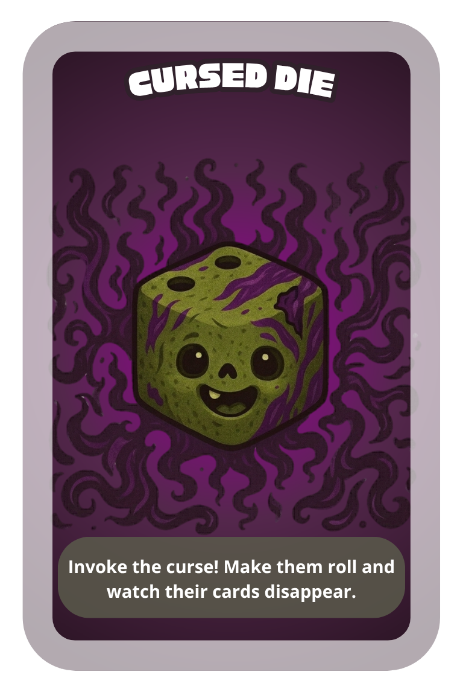

Cursed dice have been employed since the reign of King Hobnob the Indecisive, who lost three provinces and a scone in a single sitting.
Play this card on a player of your choice. They must roll the die.
| 1-2 | They discard 1 card of their choice. |
| 3-4 | They discard 2 card of their choice. |
| 5-6 | They discard 3 card of their choice. |
The curse grows even stronger with 2 cards: Play 2 Cursed Die cards simultaneously, point to a player and roll the die. They will have to discard their full hand, unless you roll a Nat 1, in which case you are cursed and will have to discard your hand.
Only valid until seven cards in the deck. One Shield Spell protects against one Cursed Die, turning it back to it’s original power.